Экшн-взаимодействие в ROS2
1. Введение в экшн-взаимодействие
Экшн-взаимодействие (action communication) — это модель взаимодействия с непрерывной обратной связью. Между двумя сторонами взаимодействия клиент отправляет данные запроса серверу, а сервер отвечает клиенту. Однако с момента получения запроса сервером до момента формирования финального ответа сервер непрерывно отправляет обратную связь клиенту.
Модель клиент/сервер для экшн-взаимодействия выглядит так:
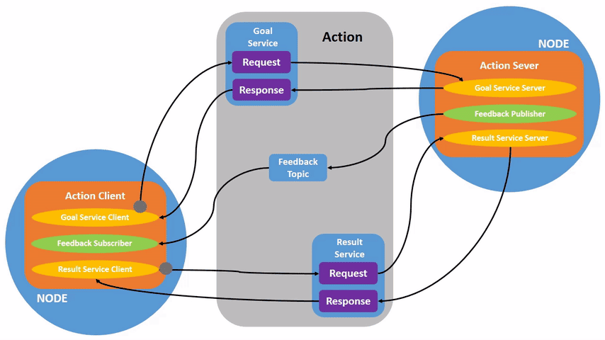
2. Пример
Экшн-клиент передаёт целочисленное значение N. Экшн-сервер получает данные запроса и суммирует все целые числа от 1 до N, возвращая итоговый результат экшн-клиенту. При каждом сложении вычисляется текущий прогресс выполнения и передаётся в виде обратной связи экшн-клиенту.
3. Создание нового пакета
3.1. Создание пакета интерфейса экшн-взаимодействия
- Для экшн-взаимодействия сначала нужно создать интерфейс экшн-взаимодействия.
Создайте новый пакет pkg_interfaces в директории src рабочего пространства.
ros2 pkg create --build-type ament_cmake pkg_interfaces
- Далее создайте папку action в пакете pkg_interfaces и создайте в папке action новый файл [Progress.action]. Содержимое файла следующее:
int64 num
---
int64 sum
---
float64 progress
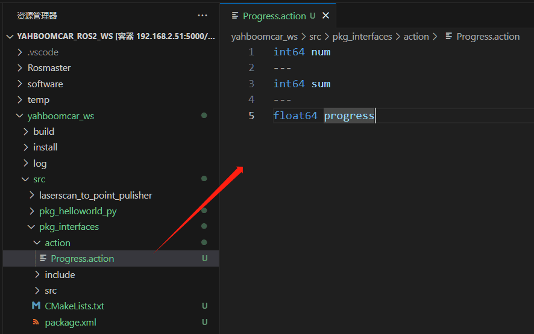
- Добавьте несколько пакетов зависимостей в package.xml. Содержимое приведено ниже:
<buildtool_depend>rosidl_default_generators</buildtool_depend>
<exec_depend>rosidl_default_runtime</exec_depend>
<depend>action_msgs</depend>
<member_of_group>rosidl_interface_packages</member_of_group>
- Добавьте следующую конфигурацию в CMakeLists.txt:
find_package(rosidl_default_generators REQUIRED)
rosidl_generate_interfaces(${PROJECT_NAME}
"action/Progress.action"
)
- Скомпилируйте пакет:
colcon build --packages-select pkg_interfaces
- После завершения компиляции в директории install рабочего пространства будут созданы соответствующие файлы C++ и Python для файла Progress.action. Вы также можете зайти в рабочее пространство в терминале и проверить определения файлов и компиляцию, выполнив следующую команду:
source install/setup.bash
ros2 interface show pkg_interfaces/action/Progress
В обычной ситуации терминал выведет содержимое, совпадающее с файлом Progress.action.
3.2. Создание пакета экшн-взаимодействия
Создайте новый пакет pkg_action в директории src рабочего пространства.
ros2 pkg create pkg_action --build-type ament_python --dependencies rclpy pkg_interfaces --node-name action_server_demo
После выполнения указанной команды будет создан пакет pkg_action, а также узел action_server_demo и соответствующие конфигурационные файлы.
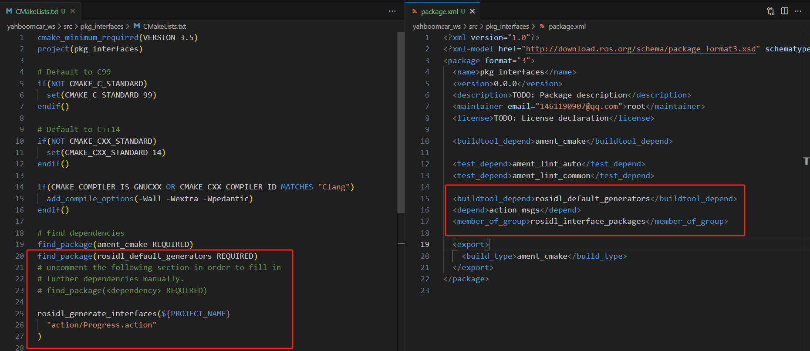
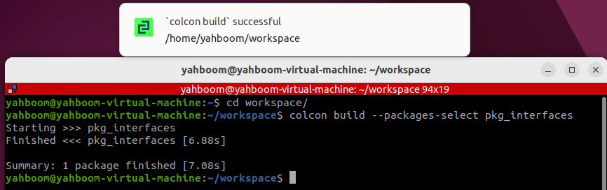
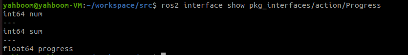
4. Реализация сервера
4.1 Создание сервера
Далее отредактируйте [action_server_demo.py], чтобы реализовать функциональность сервера, и добавьте следующий код:
import time
import rclpy
from rclpy.action import ActionServer
from rclpy.node import Node
from pkg_interfaces.action import Progress
class Action_Server(Node):
def __init__(self):
super().__init__('progress_action_server')
# Creating an action server
self._action_server = ActionServer(
self,
Progress,
'get_sum',
self.execute_callback)
self.get_logger().info('动作服务已经启动！')
def execute_callback(self, goal_handle):
self.get_logger().info('开始执行任务....')
# Generate continuous feedback;
feedback_msg = Progress.Feedback()
sum = 0
for i in range(1, goal_handle.request.num + 1):
sum += i
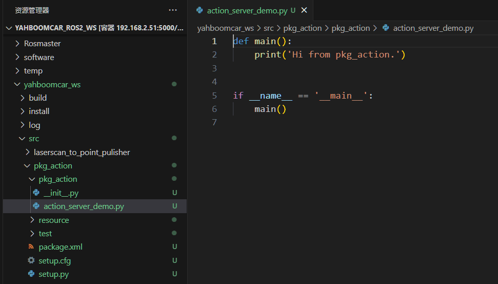
feedback_msg.progress = i / goal_handle.request.num
self.get_logger().info('连续反馈: %.2f' % feedback_msg.progress)
goal_handle.publish_feedback(feedback_msg)
time.sleep(1)
# Generate the final response.
goal_handle.succeed()
result = Progress.Result()
result.sum = sum
self.get_logger().info('任务完成！')
return result
def main(args=None):
rclpy.init(args=args)
# Call the spin function and pass in the node object
Progress_action_server = Action_Server()
rclpy.spin(Progress_action_server)
Progress_action_server.destroy_node()
# Release resources
rclpy.shutdown()
4.2 Редактирование конфигурационного файла
Откройте setup.py и добавьте следующую строку в список console_scripts:
'action_server_demo = pkg_action.action_server_demo:main',
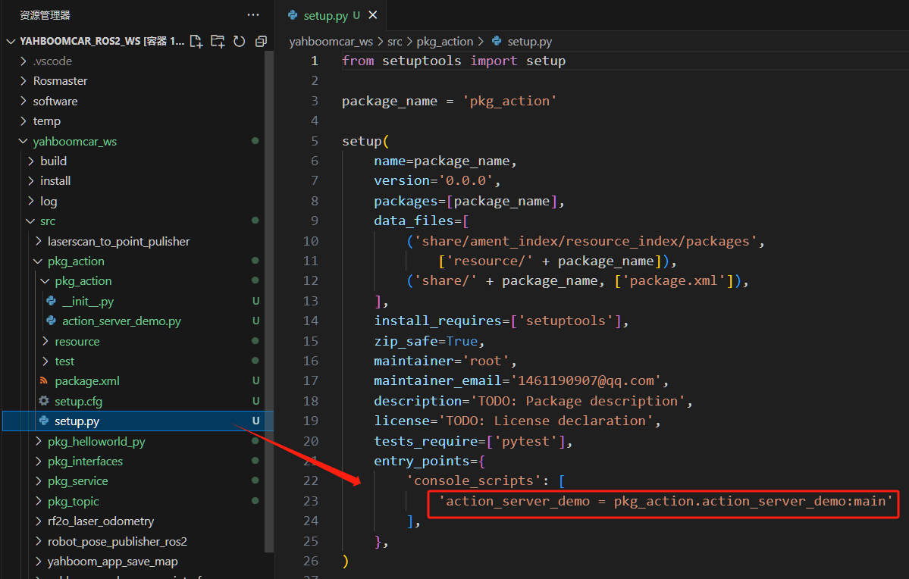
4.3 Компиляция пакета
colcon build --packages-select pkg_action
4.4 Запуск программы
ros2 run pkg_action action_server_demo
В другом терминале введите:
ros2 action list
/get_sum — это экшн, который нам нужно вызвать. Для этого введите в терминале следующую команду:
ros2 action send_goal /get_sum pkg_interfaces/action/Progress "{num: 10}"
Здесь мы вычисляем сумму значений от 1 до 10:
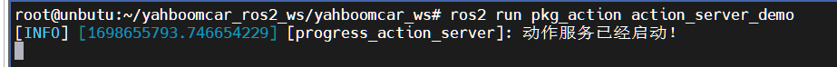
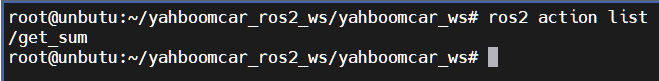
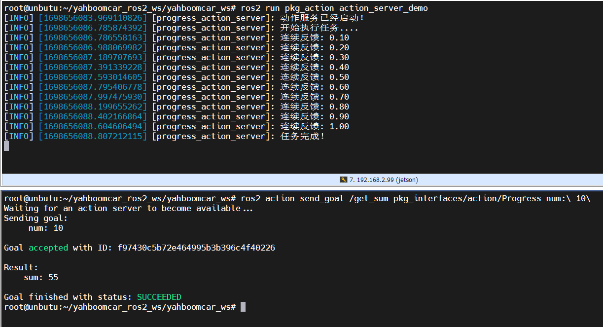
В верхней части изображения выше показан сервер, а в нижней — клиент. Вы можете видеть, что сервер непрерывно сообщает о прогрессе во время вычисления суммы от 1 до 10. Наконец, задача завершается, и клиент получает обратную связь с результатом суммы, равным 55.
5. Реализация клиента
5.1 Создание клиента
Создайте новый файл, action_client_demo.py, в той же директории, что и action_server_demo.py.
Далее отредактируйте action_client_demo.py, чтобы реализовать функциональность клиента, и добавьте следующий код:
import rclpy
from rclpy.action import ActionClient
from rclpy.node import Node
from pkg_interfaces.action import Progress
class Action_Client(Node):
def __init__(self):
super().__init__('progress_action_client')
# Create an action client;
self._action_client = ActionClient(self, Progress, 'get_sum')
def send_goal(self, num):
# Send a request;
goal_msg = Progress.Goal()
goal_msg.num = num
self._action_client.wait_for_server()
self._send_goal_future = self._action_client.send_goal_async(goal_msg,
feedback_callback=self.feedback_callback)
self._send_goal_future.add_done_callback(self.goal_response_callback)
def goal_response_callback(self, future):
# Process the feedback after the target sends it;
goal_handle = future.result()
if not goal_handle.accepted:
self.get_logger().info('请求被拒绝')
return
self.get_logger().info('请求被接收，开始执行任务！')
self._get_result_future = goal_handle.get_result_async()
self._get_result_future.add_done_callback(self.get_result_callback)
#Process the final response.
def get_result_callback(self, future):
result = future.result().result
self.get_logger().info('最终计算结果:sum = %d' % result.sum)
# 5. Release resources.
rclpy.shutdown()
# Processing continuous feedback;
def feedback_callback(self, feedback_msg):
feedback = (int)(feedback_msg.feedback.progress * 100)
self.get_logger().info('当前进度: %d%%' % feedback)
def main(args=None):
rclpy.init(args=args)
action_client = Action_Client()
action_client.send_goal(10)
rclpy.spin(action_client)
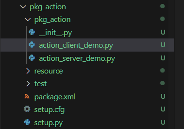
5.2 Редактирование конфигурационного файла
Откройте setup.py и добавьте следующую строку в список console_scripts:
'action_client_demo = pkg_action.action_client_demo:main'
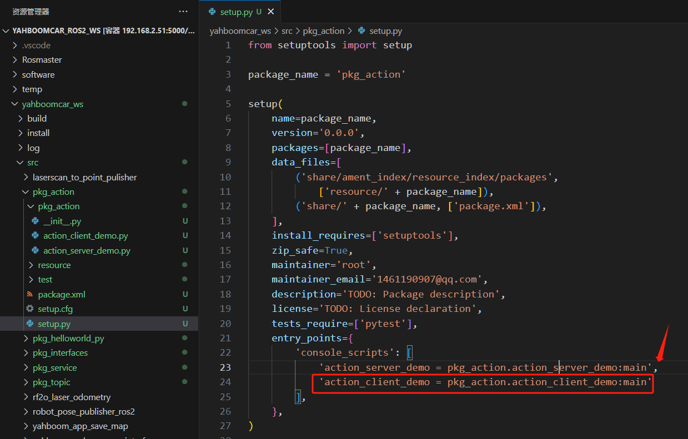
5.3 Компиляция пакета
colcon build --packages-select pkg_action
5.4 Запуск программы
Выполните следующие команды в отдельных терминалах:
# Start the server node
ros2 run pkg_action action_server_demo
# Start the client node
ros2 run pkg_action action_client_demo
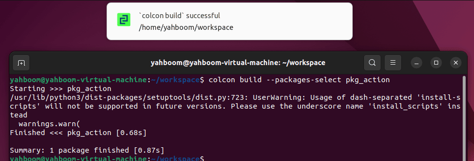
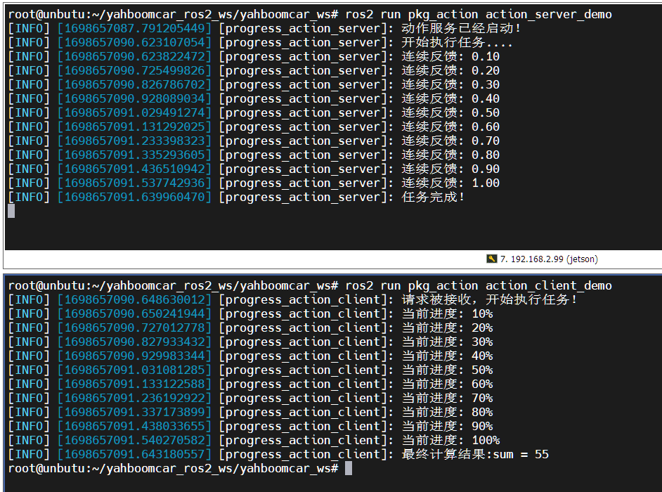
На изображении выше сервер показан сверху, клиент — снизу. Здесь мы вычисляем сумму от 1 до 10. Вы можете видеть, что сервер непрерывно сообщает о прогрессе во время вычисления. Наконец, задача завершается, и клиент получает обратную связь с результатом суммы, равным 55.